荒野生机
你是一位留在荒野边缘的自然学者，要用一格格栖息地、一群群重新野放的动物，把这片土地种回最健壮的生态系统。
01简介与目标
wildscape（名词）：植物与动物得以在极少或没有人类介入的情况下繁茂生长的区域。——《牛津英语词典》，2024 年 6 月
世界变了。
数十年的气候压力与人为干预，把全球的自然系统推到了极限。有些地区受损尤为严重：在非洲的大片区域，长期干旱、土壤退化与栖息地丧失让地貌变得脆弱、难以维持。情况恶化后，一连串自然危机迫使社区迁徙——有些社区彻底消亡。
但在人口凋零之后，土地开始重新呼吸。土壤稳定下来，水回来了，栖息地重新连通。在非洲某些偏僻的地方，少数执着的自然学者正一粒种子一粒种子地照料着自己那片恢复中的土地。他们保护脆弱的栖息地，重新引入消失的物种，扶助新的野生生长。土地会对他们的选择作出回应——有时细微，有时剧烈。
过去的错误不会重演。逼土地，它就枯萎；听荒野，它就会长成最健壮的生态系统。
若想看到一个真实的例子，强烈推荐 2013 年的短纪录片《Forest Man》（森林之人）——一个人献身自然所能成就的事，会让你受到触动。
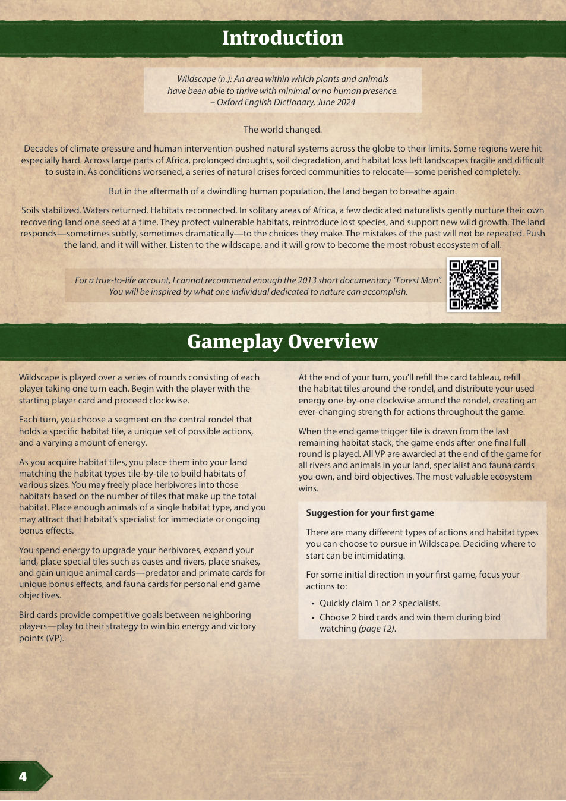
02配件
| 配件 | 数量 | 说明 |
|---|---|---|
| 轮盘版图 | 1 块 | 双面：多人面 / 单人面 |
| 栖息地板块 | 70 块 | 单格六角板块，含 1–3 种栖息地类型 |
| 食草动物板块 | 108 块 | 双面：野放面 / 定居面 |
| 蛇板块 | 24 块 | 双面：体型 1 / 体型 2 |
| 河流板块 | 46 块 | 18 块体型 1、16 块体型 2、12 块体型 3 |
| 土地板块 | 16 块 | 用于扩张领地 |
| 起始土地板块 | 4 块 | 每位玩家 1 块，双面 |
| 绿洲板块 | 15 块 | 沙漠专用，含纯沙漠与带其他栖息地的版本 |
| 掠食者奖励板块 | 18 块 | 编号 P01–P18 |
| 鸟类卡 | 10 张 | B01–B10，双面（a / b 两面） |
| 灵长类卡 | 28 张 | M01–M28 |
| 掠食者卡 | 28 张 | D01–D28 |
| 动物志卡 | 28 张 | F01–F28，终局目标 |
| 专家卡 | 40 张 | 5 类各 8 张（河流 / 湿地 / 林地 / 稀树草原 / 沙漠） |
| 专家板 | 1 块 | 双面：2 人 / 3–4 人 |
| 专家标记 | 5 个 | 每类 1 个，在各自轨道上推进 |
| 太阳能量标记 | 14 个 | 黄色，置于轮盘中环 |
| 生物能量标记 | 30+ 个 | 绿色，个人供应区 |
| 灵长类棋子 | 14+ 个 | |
| 掠食者棋子 | 14+ 个 | |
| 行动选择标记 | 1 个 | |
| 观鸟板块 | 2 块 | 压在栖息地板块堆上 |
| 终局触发板块 | 1 块 | 压在最后一堆栖息地板块上 |
| 记录骰 | 10+ 颗 | 可选，用于记录栖息地剩余空间 |
| 单人卡 | 1 张 | 单人模式专用 |
| 起始玩家卡 | 1 张 | |
| 玩家帮助卡 | 4 张 | |
| 计分纸 | 1 本 |
03游戏概览
Wildscape 以若干轮进行，每轮中每位玩家各行动一次。持起始玩家卡者先行动，之后按顺时针进行。
每个回合，你在中央轮盘上选择一个扇区：该扇区决定你本回合能拿到的栖息地板块、可以执行的一组行动，以及可用的能量数量。
取得的栖息地板块要一格格放进自己的领地，相同类型的边缘相接即拼成不同大小的栖息地。你可以按栖息地的板块总数，往里面放入食草动物。某一类栖息地里放够数量的动物，就能吸引该类栖息地的专家，获得即时或持续的效果。
你花费能量来让食草动物定居、扩张领地、放置绿洲与河流、放置蛇，并获取各种动物卡——掠食者卡与灵长类卡带来独特的奖励效果，动物志卡则是你的个人终局目标。
鸟类卡是相邻玩家之间的竞争目标：顺应它们的偏好，就能赢得生物能量与胜利分（VP）。
回合结束时，你要补充卡牌展列区、补充轮盘上的栖息地板块，并把用掉的能量一枚一枚顺时针发回轮盘各扇区，使各个行动在整局中强弱不断变化。
当最后一堆栖息地板块翻出终局触发板块时，再完整进行一轮，游戏结束。终局时为领地中的河流与动物、你拥有的专家卡与动物志卡、以及鸟类目标统一计分。生态系统最有价值者获胜。
04设置
轮盘
- 把轮盘版图放在桌面中央，多人面朝上。
- 随机选一个扇区作为起点，从此处顺时针，把 14 枚太阳能量标记（黄色）按「2 枚、1 枚、2 枚、1 枚……」交替放进轮盘中环，直到填满所有格位。
- 把行动选择标记放在轮盘旁。
栖息地板块
- 洗混栖息地板块，把 9 块正面朝上放在轮盘上为其预留的格位。
- 在轮盘旁按玩家人数设置 3 堆背面朝上的栖息地板块：2 人局每堆 8 块、3 人局每堆 12 块、4 人局每堆 16 块。
- 在其中 2 堆的顶上各放 1 块观鸟板块。
- 把所有剩余的栖息地板块叠成第 4 堆，背面朝上，顶上放终局触发板块。
专家板
- 把专家板按人数对应的一面朝上（3/4 人面或2 人面）。
- 把 5 个专家标记分别放到各自颜色轨道的起始格。
- 把 5 类专家卡分别洗混，背面朝上放在专家板旁。
卡牌展列区
- 把三类动物卡（动物志、灵长类、掠食者）分别洗混。每类各占一行，从每叠翻出顶部 3 张，构成 3×3 的展列区；每叠剩下的牌背面朝下放在对应行的右侧。
- 洗混鸟类卡，在每一对相邻玩家之间发 2 张——随机决定哪一面朝上。其余的放回盒中。2 人局：两位玩家之间一共发 4 张。
公共供应区
- 洗混 16 块土地板块，背面朝下叠成一堆，把最上面一块翻到正面。
- 随机翻出数量等于玩家人数 ×3 的掠食者奖励板块，正面朝上；其余放回盒中。
- 放在玩家伸手可及处：食草动物板块（按栖息地类型与数值分类，野放面朝上，见第 6 节）、蛇板块（按栖息地类型分类）、河流板块（按体型分类）、绿洲板块（按附带的栖息地分类）、掠食者棋子、灵长类棋子、生物能量标记（绿色）。
玩家设置
- 洗混 4 块起始土地板块，每位玩家发 1 块。
- 每位玩家取 2 枚生物能量标记。
- 最近一次亲眼见过野生动物的人先手，拿取起始玩家卡。
- 每位玩家抽 6 张卡：动物志、掠食者、灵长类各 2 张。
- 每位玩家从手牌中弃掉任意 3 张动物卡，并选择起始土地板块的任意一面朝上打出（图中未显示）。
更进阶的玩法见附录 G 的专家轮抽。
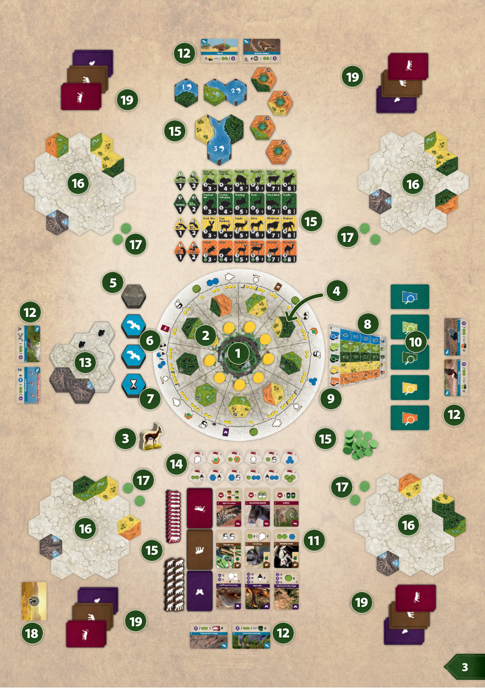
05核心概念：栖息地
Wildscape 的两个核心动作是放置栖息地板块与放置食草动物。这一节讲清前者，下一节讲后者。
五种栖息地类型
河流、林地、湿地、稀树草原、沙漠。
一块栖息地板块上可能含有 1、2 或 3 种不同的栖息地类型。每当你获得栖息地板块，把它放进自己领地的任意空格，朝向随意：不需要与相邻板块的边缘匹配，也不需要与其他板块相邻。如果你不想放，也可以直接弃掉。
栖息地的大小
规则中单独说「栖息地」，指的是你领地内由栖息地板块拼成、同一类型且彼此连通的一片区域。一片栖息地的大小＝边缘相接且类型相同的板块数。
部分栖息地板块上印有新芽图标，代表格外丰茂的板块：该图标使它所在的那一种栖息地+1（不增加同一板块上其他类型的数值）。
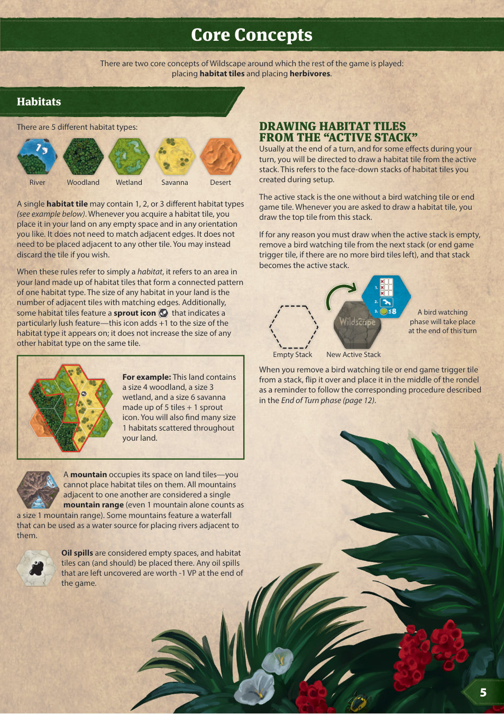
山与山脉
山占据土地板块上的格位，不能在上面放栖息地板块。彼此相邻的山合称一道山脉（单独一座山也算大小 1 的山脉）。部分山带瀑布，可作为在其旁边放置河流的水源。
漏油
漏油视为空格，可以在上面（也应该在上面）放栖息地板块。终局时每一个仍未覆盖的漏油扣 1 VP。
从「活动堆」抽取栖息地板块
通常在回合结束时、以及某些效果进行中，你会被要求从活动堆抽一块栖息地板块。活动堆指设置阶段叠好的那几堆背面朝上的栖息地板块。
活动堆就是那堆顶上没有观鸟板块或终局触发板块的牌堆。每次抽板块，都从这堆的顶上拿。
若因任何原因在活动堆已空时仍需抽取，就从下一堆上取走观鸟板块（若已无观鸟板块，则取走终局触发板块），那一堆随即成为新的活动堆。
当你从某堆上取走观鸟板块或终局触发板块时，把它翻到正面放进轮盘中央，提醒本回合结束时执行第 12 节中对应的流程。
06野放食草动物
「野放（reintroduction）」是把物种刻意释放回野外，以建立健康、遗传多样、可自我维持的种群。「定居（established）」则指该物种已在新环境成功落脚并繁殖，扩散开来。
食草动物板块是双面的：进入游戏时都是野放面，之后才可能翻到定居面。两面都印有名称、体型、数值与栖息地类型。
野放状态下的食草动物，体型与数值相等；板块上的圆点表示它若定居，数值会提高多少。定居面以心形图标标示，代表种群健康兴旺——数值提高后的完整数值会显示出来，而体型不变。请注意：卡牌一般引用食草动物的数值，从不引用体型。
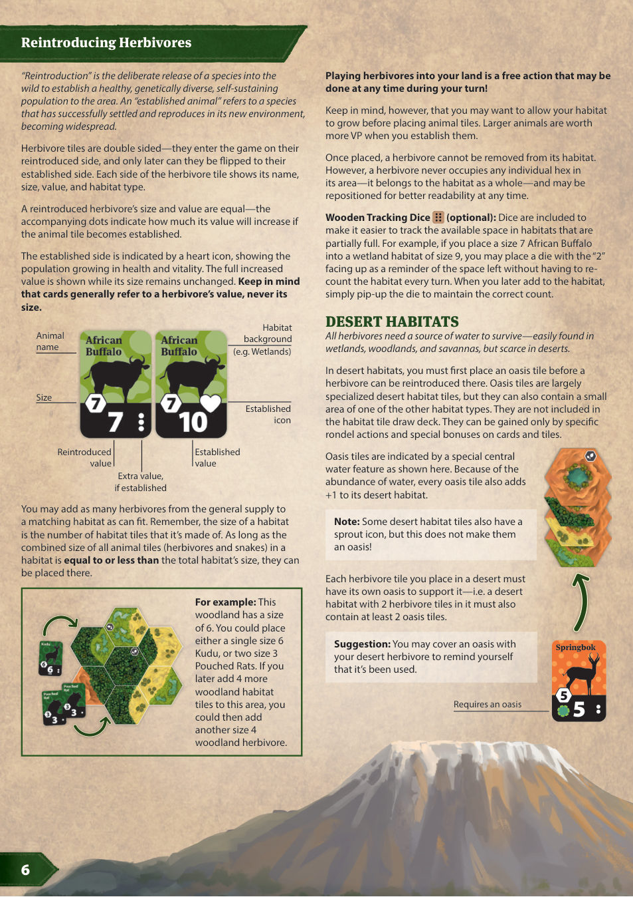
放入栖息地
只要放得下，你可以从公共供应区往对应的栖息地里放入任意数量的食草动物。判断标准：一片栖息地内所有动物板块（食草动物与蛇）的体型之和，小于或等于该栖息地的大小。
不过，也可以等栖息地长大一些再放动物：体型越大的动物，定居后分值越高。
已放下的食草动物不能从栖息地移走。但它并不占据区域内任何单独的六角格——它属于整片栖息地——任何时候都可以为了便于阅读而挪动位置。
沙漠栖息地
所有食草动物都需要水源——湿地、林地、稀树草原都容易找到，沙漠则极为稀缺。
在沙漠栖息地中，必须先放一块绿洲板块，才能在那里野放食草动物。绿洲板块基本上是一种特殊的沙漠栖息地板块，但也可能含有一小片其他类型的栖息地。绿洲不在栖息地板块抽牌堆里，只能通过特定的轮盘行动、以及卡牌与板块上的特殊奖励获得。
绿洲板块以中央的特殊水域标示。由于水源充足，每块绿洲板块都使其所在的沙漠栖息地 +1。
你在沙漠中放下的每一块食草动物板块，都必须有自己的一块绿洲来支撑：即一片放了 2 块食草动物板块的沙漠栖息地，其中至少要有 2 块绿洲板块。
小建议：把沙漠食草动物压在绿洲板块上，可以提醒自己这块绿洲已被占用。
07回合与能量
回合中可做的行动很多，有些要花能量，有些免费。Wildscape 的能量分为两种。
太阳能量显示在轮盘上。你永远不能拿走它，也不能弃掉它。它被使用后会自动循环回来，供你用于各种用途——它从不真正耗尽，只是从一种形态转成另一种。
另一种是生物能量，储存在大地与生物体内，放在你的个人供应区，需要时花掉。你可以从环境中获得生物能量（部分专家即代表环境），也可以从生物界获得——掠食者、灵长类、鸟类。在轮盘上也能把太阳能量转化为生物能量（见第 10 节）。
回合结构
每回合有 2 个必做动作：
- 在轮盘上选择一个扇区。
- 选择拿取免费的栖息地板块，或打出一张灵长类卡。
可选动作有：
- 执行轮盘行动
- 打出掠食者卡
- 吸引专家
- 激活专家效果
- 野放食草动物（见第 6 节）
除了一处例外，所有动作的顺序随意：你必须先选好轮盘扇区，才能做依赖它的动作（拿免费栖息地板块、执行轮盘行动）。除此之外，这些依赖动作之间、以及它们与其他动作之间，顺序都可以自由安排。
每个动作必须完整结算后才能做下一个。所有对自己有利的效果都是可选的——可以全拿、拿一部分、或全都不拿——但必须当场决定，否则视为放弃。同理，获得的板块必须立刻放置或弃掉。若在同一时点获得多个奖励，可以任意顺序结算。任何代价（例如弃一张卡、或按图标支付能量）都必须支付，才能获得与之关联的效果。
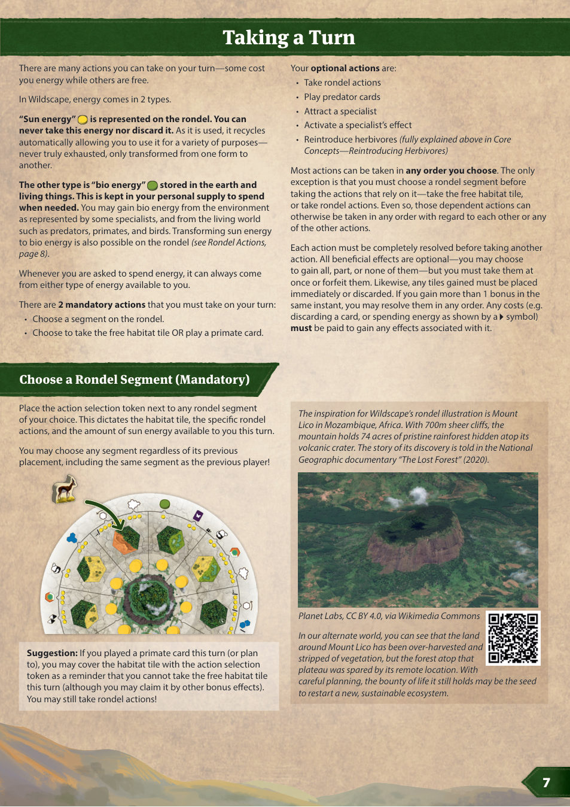
08选择轮盘扇区（必做）
把行动选择标记放到任意一个轮盘扇区旁。这个选择决定你本回合可用的栖息地板块、可执行的轮盘行动，以及可用的太阳能量数量。
你可以选任何扇区，不管它上一回合被谁用过——甚至可以选和上一位玩家完全相同的扇区。
09栖息地板块或灵长类卡（必做）
回合中的某个时刻，你必须在这两个选项中选一个执行。
拿取免费栖息地板块
选择此项，你必须拿走你所在扇区的那块栖息地板块。不过如果你不想放进领地，可以把它弃掉。
或者：打出一张灵长类卡
作为拿免费栖息地板块的替代，你每回合可以打出 1 张手牌中的灵长类卡。流程如下：
- 把一枚灵长类棋子放到一块栖息地板块上，该板块须含有卡片左上角标示的栖息地类型之一。若该板块同时具备两种偏好类型，你必须为这只灵长类选定其中一种作为它的家。
- 你不能把灵长类放到与其他灵长类棋子相邻的格子上——灵长类有领地性！如果无处可放，就不能打出这张卡。
- 放好棋子后，获得卡面上的即时效果。
灵长类需要很大的领地，因此终局时，围绕它们的板块若与其偏好栖息地匹配，会上分（见第 13 节）。玩家帮助卡上标出了各类栖息地在灵长类卡中出现的频率（林地最常见）。
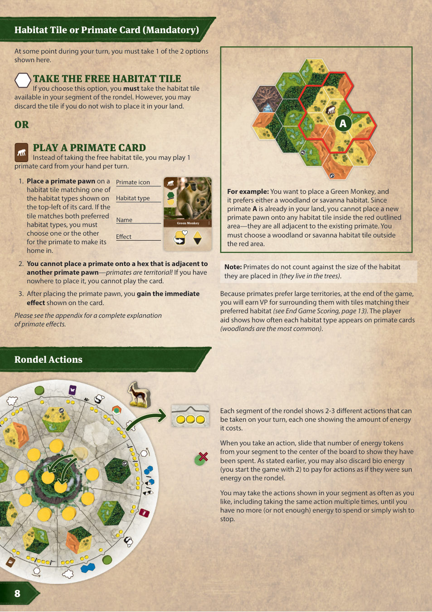
10轮盘行动
每个扇区上印有 2–3 种可执行的行动，各自标明所需能量。
执行行动时，把相应数量的能量标记从你的扇区推到版图中央，表示已花费。如前所述，你也可以弃掉生物能量（开局有 2 枚），当作轮盘上的太阳能量来支付。
你可以任意多次执行本扇区上的行动，包括同一行动重复执行，直到没有能量、能量不足、或你不想再做为止。
| 行动 | 原文 | 效果 |
|---|---|---|
| 获得生物能量 | Gain Bio Energy | 从供应区取 1 枚生物能量。 |
| 拿取卡牌 | Take a Card | 从展列区拿取 1 张指定类型的正面朝上的卡（灵长类 / 掠食者 / 动物志）。展列区的空位要到回合结束才补。 |
| 使食草动物定居 | Establish a Herbivore | 把一块食草动物板块翻到定居面（见第 6 节）。它的数值提高——这会同时影响专家、掠食者、动物志的达成条件与终局计分。 |
| 拿取栖息地板块 | Take Habitat Tiles | 从你所在扇区逆时针方向的扇区拿取并放置栖息地板块。紧邻的扇区 2 能量，隔 1 格 3 能量，再远 4 能量，依此类推。不必按由近到远拿。 |
| 放置土地板块 | Place a Land Tile | 取土地板块堆顶上的一块，放在现有领地旁的任意位置、任意朝向，必须与现有领地至少一个六角格边对边相接。放好后把堆上下一块翻到正面。 |
| 放置绿洲 | Place an Oasis | 把一块绿洲板块放在空格上。可任选现有绿洲：带林地 / 湿地 / 稀树草原的，或纯沙漠的。 |
| 放置河流 | Place a River | 按图标支付 2/3 能量，放置体型 2/3 的河流板块。河流板块双面，可任选一面朝上（两面栖息地分布不同，但板块本身相同）。放置时至少要有一条水边与领地内已有的水边相接。 |
| 放置 2 个蛇板块 | Place 2 Snakes | 取 2 块蛇板块（可同可不同）放进对应栖息地。蛇板块双面（体型 1 / 体型 2），只要栖息地够大，可任选一面朝上。放入后不能再翻面。 |
| 蛇与河流 | Snakes & Rivers | 体型 1 的河流与蛇任选共 2 个，放置规则同上。 |
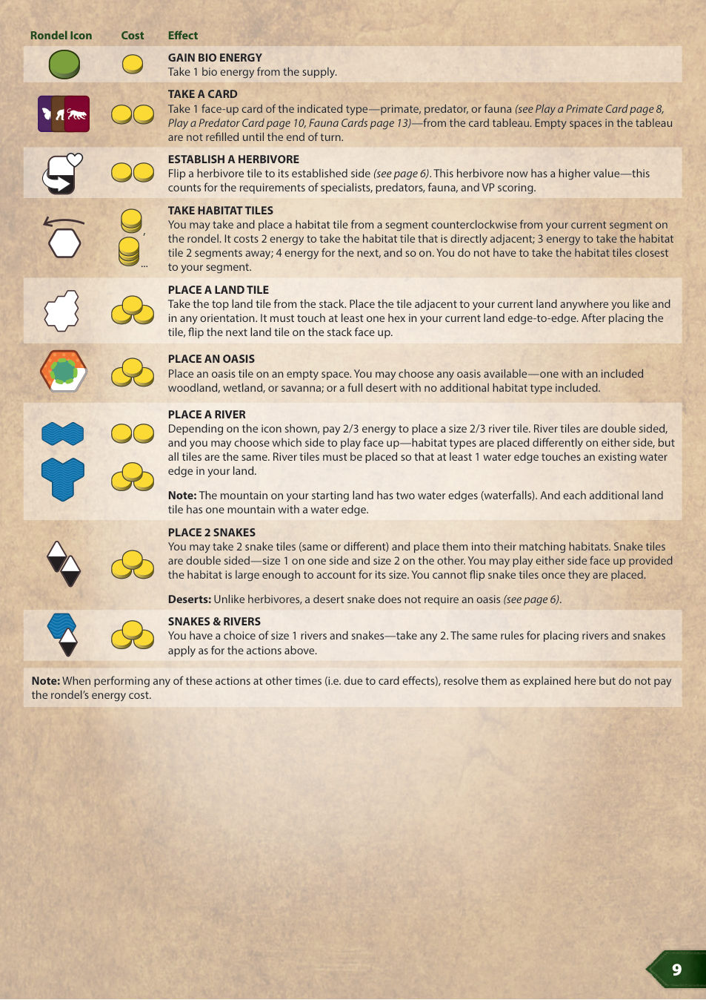
11免费行动
除「野放食草动物」外，以下行动在你回合中可以任意次执行。它们不花能量，但各自可能有前置条件。
11.1 打出掠食者卡
要打出手牌中的掠食者卡，必须：
- 满足卡面上写明的条件。
- 把一枚掠食者棋子放到用于满足条件的动物板块之一上。每块动物板块只能有 1 枚掠食者棋子——若没有可用的动物板块，就不能打出这张卡。
- 放好棋子后，可以任选一块正面朝上的掠食者奖励板块，获得其即时效果。奖励板块用完后，仍然可以继续打掠食者卡。
掠食者偏好体型大、已定居的猎物（这样的兽群数量更多），因此终局时你还将按其所在动物板块的数值得分（见第 13 节）。
几点说明：
- 掠食者不计入所在栖息地的大小。
- 一块动物板块代表的不是一只动物，而是一个兽群。因此即使被掠食者捕猎过，食草动物兽群依然可以定居！这对猎手而言意味着更稳定的食物来源，掠食者终局也更值分。
- 掠食者的条件只在初次放置时检查。之后即使条件不再成立，也没有关系——它仍然留在那只食草动物身上。
沙漠里的 Hyrax（岩蹄兔） 上已有掠食者棋子，不能再放——但注意，它仍然可以用来满足沙漠鳄的条件！你选择把棋子放到湿地里空闲的 Bushpig（非洲野猪） 上；Jaculus（跳鼠）与 Greater Cane Rat（大蔗鼠） 同样有效，因为它们也计入沙漠鳄的条件。
随后你可以领取一块剩余的掠食者奖励板块，例如「放置体型 3 的河流板块」，并按正常规则把河流放进领地。
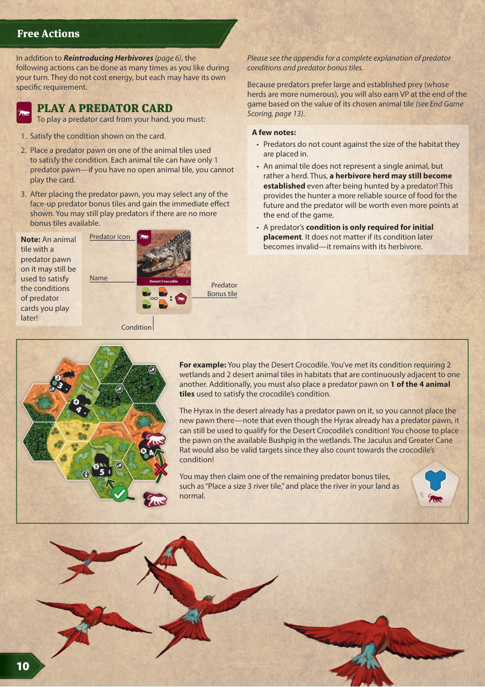
11.2 吸引专家
专家一直在为自己的研究领域寻找新的站点。要吸引他们，你必须在与其类型相符的栖息地里拥有兴旺的动物群落。
每位玩家在整局中每类专家只能吸引 1 位，合计 5 位。
把某一类栖息地中所有动物板块（食草动物与蛇）的数值相加——它们不必在同一片栖息地里！若是河流专家，则把你所有河流板块的数值相加。若总和大于或等于该专家在轨道上正上方格印的数字，即视为成功引起注意。此时：
- 立刻把该专家标记在轨道上上移 1 格。
- 从对应牌堆抽 2 张专家卡，选 1 张正面朝上放在桌上，另一张放到该牌堆底部。
若你同时达成多位专家的条件，可以任意顺序选择；但每次选择必须单独进行，且不能先看后面牌堆的内容。
若使用专家变体：不抽牌堆，直接打出你在游戏开始时选定的那位专家。
11.3 激活专家效果
专家卡的效果按图标决定使用频率：每局一次、每回合一次、或可重复。若卡上没有图标，请到附录查阅该卡的触发时机。
若多张卡的效果在同一时点触发，由你决定结算顺序。
若专家给予你某个具体行动，你不需要站在对应的轮盘扇区上——除非卡面或附录另有说明。
| 图标 | 含义 |
|---|---|
| 1× | 每局一次：使用后把卡横置，表示不能再用。 |
| ↻1× | 每回合一次：同一回合内不能重复使用该专家效果。 |
| ∞ | 可重复：你回合中可以任意次获得该效果。 |
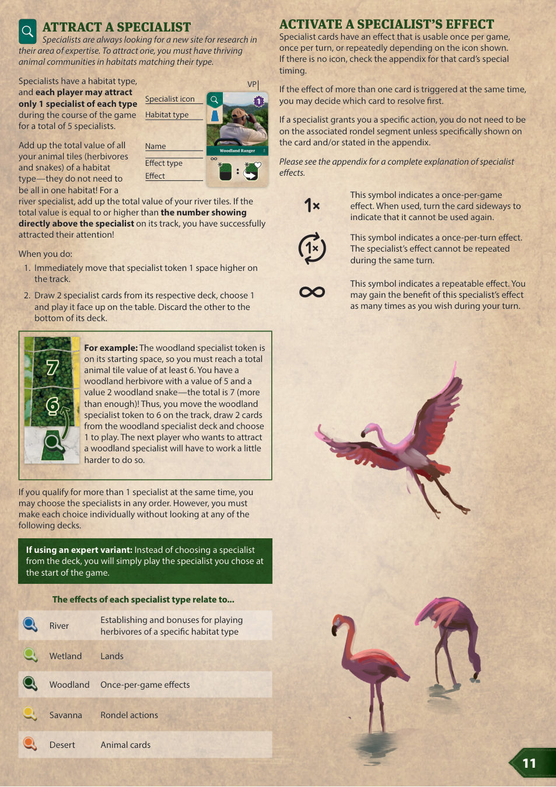
12回合结束
行动做完后，依次执行：
- 分配能量
- 补充栖息地板块
- 补充卡牌展列区
- 观鸟或终局触发（如需要）
12.1 分配能量
从行动选择标记顺时针的下一个扇区开始，把一枚已使用的能量标记放进之后的各个顺时针扇区，直到中央清空为止。
12.2 补充栖息地板块
从行动选择标记所在扇区开始顺时针，用活动堆的栖息地板块把轮盘上的空扇区逐一补满。
12.3 补充卡牌展列区
展列区若有空位，先把正面朝上的卡向左推填补空隙，再从各自牌堆翻牌补齐剩余空位。若某类牌堆已空，把该类弃牌洗混作为新牌堆。
12.4 观鸟或终局触发
若本回合从某堆栖息地板块上取走了观鸟板块或终局触发板块，执行下面对应流程；否则直接轮到下一位玩家。
观鸟
- 每次游戏中期的观鸟开始时，先更新展列区：把每行最左边的一张动物卡弃掉，然后照常补齐。
- 然后开始观鸟。每张鸟类卡都依据你领地中的板块或棋子设定独特条件（完整说明与平手判定见附录 A）。每一对相邻玩家共同比较他们之间的 2 张鸟类卡（2 人局为 4 张），谁更符合某只鸟的条件，就从供应区获得 2 枚生物能量。若平手（在适用平手判定之后），双方各得 1 枚——你也可以以 0 比 0 平手。
- 观鸟结束后立刻检查：若你此时生物能量超过 8 枚，超出的部分退回公共供应区。请提前把能量花掉，别浪费。
终局触发
记住持起始玩家卡的人是谁，让所有玩家把当前这一轮走完，使每人行动次数相同；然后所有人再各进行 1 个完整回合。随后按第 13 节计分。
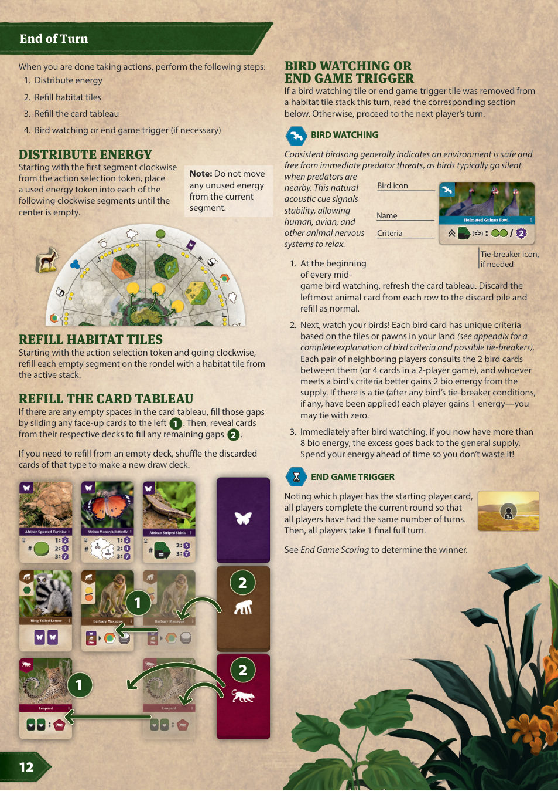
13终局计分
最后一轮结束后，把来自卡牌与棋子的胜利分相加：
- 最终的观鸟
- 掠食者棋子
- 灵长类棋子
- 手牌中的动物志卡
- 已打出的专家卡
再加上领地中板块印的数值：
- 所有河流的数值总和
- 所有食草动物与蛇的正面数值总和（黑底白字那个数）
最后，每一个仍然露着的漏油扣 1 VP。
胜利分最高者获胜，拥有最有价值的生态系统！平手时，回合顺序靠后的玩家获胜。
13.1 最终观鸟
每对相邻玩家照旧比较他们之间的 2 张鸟类卡（2 人局 4 张），判定每只鸟的归属。但此时不再获得能量：每赢得一只鸟得 2 VP，平手则各得 1 VP。
13.2 掠食者棋子
掠食者偏好体型大的猎物与数量充足的兽群。每枚掠食者棋子按其猎物（即所在动物板块）的数值，依下表得分。
| 猎物数值 | 掠食者棋子得分 |
|---|---|
| 1–3 | 1 VP |
| 4–6 | 2 VP |
| 7–9 | 3 VP |
| 10–12 | 4 VP |
13.3 灵长类棋子
灵长类偏好大片领地：与其所在栖息地板块的偏好类型每个相邻且匹配的边缘得 1 VP。
13.4 动物志卡
动物志卡一旦获得就留在手中。它们属于动物卡，可以用来支付任何要求「弃一张动物卡」的效果。
若把动物志卡留到终局，则按你满足卡面条件的程度得分。图标右侧标示要数什么——可能是栖息地、动物板块、某种特定的六角板块等等。卡右侧列出对应数量的分值。每张动物志卡只计一次分，即使你的数量超出表格上限。不过，同一样东西可以同时计入多张动物志卡。
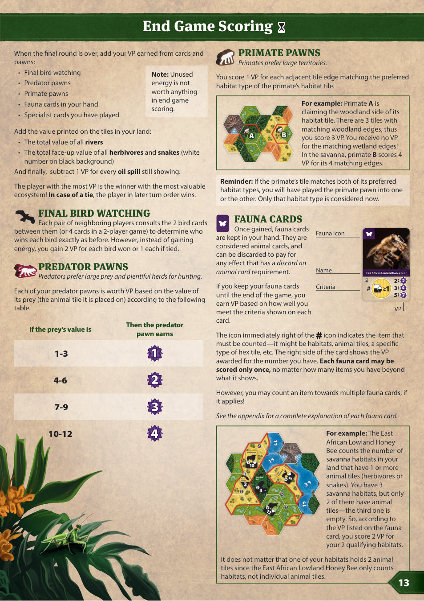
14单人规则：盗猎者
单人模式中，你的对手是盗猎者——他们在荒芜之地上猎捕脆弱的动物。你唯一的希望，是把这片荒野恢复到足够健壮，让动物有一个安全的避难所。
盗猎者是一个模拟人类对手行动的人工玩家。开局前你必须选择 1（最易）到 7（最难）的难度：它决定盗猎者的起始动物板块，以及他们在游戏中获得的动物与河流板块的数值。
14.1 单人设置
按 2 人局设置，但有以下差异：
- 轮盘版图单人面朝上。
- 不需要按观鸟板块专门分堆栖息地板块。把终局触发板块（最下）与两块观鸟板块（最上）按图示叠放在单人卡中央。观鸟阶段与终局会在固定轮次发生；需要抽栖息地板块时，直接从公共供应的背面堆里抽。
- 不使用鸟类卡 B07 黑胸蛇鹰 / 秃鹮（数蛇的种类 / 数专家卡张数）。若发到，换一张别的鸟。
- 把 6 块可用的掠食者奖励板块随机排成一行。盗猎者领取时从左往右依次拿走。
- 盗猎者不拿卡牌、生物能量，也没有起始土地板块。
- 盗猎者开局拥有：
- 个人供应区中各 1 枚灵长类棋子与掠食者棋子。
- 每种栖息地各 1 块动物板块——每块动物的体型等于难度等级。因此难度为 1 或 2 时，盗猎者起始用的是对应体型的蛇。
- 由你选择、总数值等于难度等级的河流板块。
14.2 进行游戏
游戏恰好进行 12 轮。第 4 轮与第 8 轮后各进行一次完整的观鸟阶段；第 12 轮盗猎者回合结束后，游戏结束。
每轮你先行动，按正常规则进行。轮到盗猎者时，他们依次：
- 选择一个轮盘扇区。
- 弃掉免费栖息地板块。
- 只结算该扇区上标示的盗猎者专属行动。
- 照常执行回合结束阶段（观鸟规则见下）。
14.3 盗猎者选择扇区
盗猎者总是选择能量最多的扇区。若并列，选从你的行动选择扇区顺时针数第一个的那个。
14.4 盗猎者弃掉栖息地板块
盗猎者对保护环境毫无兴趣，总是弃掉自己扇区上的栖息地板块，把它放到单人卡上的空位。当单人卡上放满 4 块时，在盗猎者回合结束时结算单人卡中央板块上的事件（见 14.7）。
14.5 盗猎者的轮盘行动
盗猎者的行动永远是「先拿一块动物板块」，然后结算额外行动。
动物板块
- 盗猎者拿取一块栖息地类型与「其扇区的盗猎者环」相符的动物板块。
- 若该环显示全白，盗猎者选择自己动物总数值最低的那种栖息地（并列时由你选择）。
- 体型等于该扇区上现有的能量标记数——这些能量由盗猎者支付到版图中央。若扇区上印有 + 图标，体型＝能量数 + 难度等级！
- 若没有该体型的动物可用，就取下一个更小体型，再取另一块动物板块补足差额，依此类推。
额外行动
- 拿取总数值等于难度等级的河流板块（由你选择）。
- 让盗猎者体型最大的 2 只食草动物定居（并列时由你选择）。
- 弃掉展列区中指定类型最左边的一张卡。若是灵长类卡，盗猎者取 1 枚灵长类棋子；若是掠食者卡，盗猎者取 1 枚掠食者棋子，并弃掉最左边的掠食者奖励板块。
14.6 专家
盗猎者活动太多，专家会觉得极不安全。盗猎者不拿专家；但若他们在你打出对应专家之前先累积到 6 点动物或河流数值，就把该专家标记推到轨道第 6 行。此后你吸引该专家的阈值变为 8。
14.7 观鸟与终局
盗猎者回合结束时，若单人卡上的 4 个槽位都已填满，把这 4 块板块取下另放成一堆，然后结算单人卡中央板块的事件。
观鸟板块
与盗猎者进行一次完整的观鸟阶段。争夺鸟类卡时，盗猎者照常获得生物能量。
部分鸟类卡带特殊图标，表示这张卡对盗猎者另有评估方式，详见附录 A。
之后，即使盗猎者的能量超过 8 枚也不弃掉；终局时他们每持有 1 枚生物能量就得 1 VP。
最后，把最上面的那块观鸟板块放到刚才那 4 块栖息地板块堆上。
终局触发板块
游戏立刻结束，按 14.8 计分。
14.8 单人终局计分
第 12 轮结束后游戏结束。照常进行最终观鸟：胜者得 2 VP，平手各得 1 VP。
你按正常规则计算总分；盗猎者的总分等于：
- 他们的最终观鸟得分
- 他们食草动物的数值
- 他们蛇的数值
- 他们河流的数值
- 他们每枚生物能量 1 VP
若你的分数高于盗猎者，说明你建起的生态系统足够健壮，能把动物从灭绝边缘救回来。
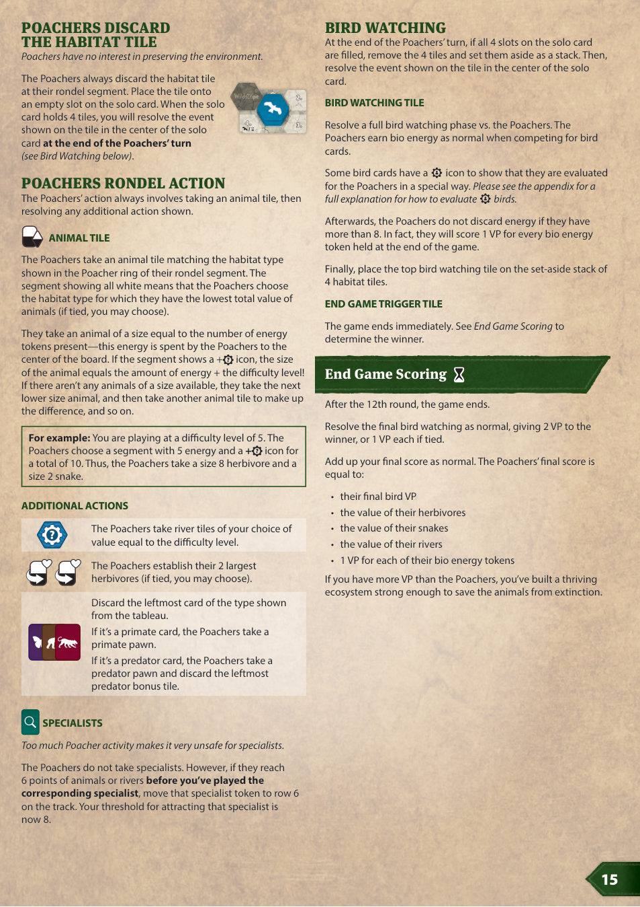
A附录 A：鸟类卡 B01–B10
鸟类卡双面，每张都有 a / b 两面。同一张卡的两面是两只不同的鸟，各自有独立的条件。
| 编号 | 鸟名 | 条件 |
|---|---|---|
| B01a | Saddle-billed Stork 鞍嘴鹳 | 你拥有数值最高的那片河流栖息地。 |
| B01b | Lesser Flamingo 小红鹳 | 你拥有最多「数值至少 3」的河流栖息地。 |
| B02a | African Openbill 非洲钳嘴鹳 | 你拥有最多的湿地动物板块。 |
| B02b | African Fish Eagle 非洲海雕 | 你拥有数值最高的那一块湿地动物板块；平手时比较第二高，依此类推。 |
| B03a | Yellow-billed Kite 黄嘴鸢 | 你拥有最多的林地动物板块。 |
| B03b | Helmeted Guinea Fowl 盔珠鸡 | 你拥有数值最高的那一块林地动物板块；平手时比较第二高，依此类推。 |
| B04a | Cattle Egret 牛背鹭 | 你拥有最多的稀树草原动物板块。 |
| B04b | Ostrich 鸵鸟 | 你拥有数值最高的那一块稀树草原动物板块；平手时比较第二高，依此类推。 |
| B05a | Crowned Sandgrouse 冠沙鸡 | 你拥有最多的沙漠动物板块。 |
| B05b | Secretary Bird 蛇鹫 | 你拥有数值最高的那一块沙漠动物板块；平手时比较第二高，依此类推。 |
| B06a | Kori Bustard 灰颈鹭鸨 | 你拥有最多已定居的食草动物。 |
| B06b | Southern Ground Hornbill 红脸地犀鸟 | 你拥有最多「数值 6 以上」的食草动物。 单人模式：不计盗猎者的起始动物板块。 |
| B07a | Black-chested Snake Eagle 黑胸蛇鹰 | 你拥有种类最多的蛇。蛇共 8 种——每种栖息地各有数值 1 与数值 2 各一种。 单人模式不使用。 |
| B07b | Northern Bald Ibis 隐鹮 | 你打出过最多的专家卡。 单人模式不使用。 |
| B08a | Fischer’s Lovebird 费氏牡丹鹦鹉 | 你拥有最多的灵长类棋子。 |
| B08b | White-backed Vulture 白背兀鹫 | 你拥有最多的掠食者棋子。 |
| B09a | Mountain Wheatear 山䳭 | 你拥有最多的山脉。 单人模式：在争夺第 1／第 2／最后一名的比较中，视盗猎者拥有 2／4／6 道山脉。 |
| B09b | Mountain Buzzard 山鵟 | 你拥有最多「至少大小 2」的山脉。 单人模式：比较三档时视盗猎者拥有 1／2／3 道大小 2 的山脉。 |
| B10a | Grey Crowned Crane 灰冠鹤 | 你拥有最长的一条直线连续已占据格。 单人模式：比较三档时视盗猎者有 5／7／9 个连续已占据格。 |
| B10b | Shoebill 鲸头鹳 | 在 3 个方向上分别找出你最长的连续已占据格直线，用你的第二长那条与对手比较。若你有两条并列最长，其中一条算作第二长。 单人模式：比较三档时视盗猎者有 4／6／8 个连续已占据格。 |
灰冠鹤（B10a）：部分得益于保护措施，卢旺达、赞比亚与乌干达近年数量回升，可能扭转其下滑趋势。坦桑尼亚的鸟类图谱项目估计现有 1000–1600 只，高于 2014 年的 600–1000 只，这很可能与卢旺达和坦桑尼亚之间卡盖拉河谷的种群移动有关。
B附录 B：灵长类卡 M01–M28
灵长类卡打出后立即结算卡面效果。放置棋子时必须遵守第 9 节的三条限制（类型匹配、不得与其他灵长类相邻、无处可放则不能打）。
| 编号 | 名称 | 效果 |
|---|---|---|
| M01 | Mantled Guereza 东黑白疣猴 | 弃 1 张手牌中的动物卡，放置 1 块土地板块与 1 块体型 3 的河流板块。 |
| M02 | Mandrill 山魈 | 弃 1 张手牌中的动物卡，从轮盘放置 2 块栖息地板块。 |
| M03 | Red-tailed Monkey 红尾长尾猴 | 从活动堆取 2 块栖息地板块并放置。 |
| M04 | Blue Monkey 青猴 | 使 2 只食草动物定居。 |
| M05 | Gorilla 大猩猩 | 从展列区同一列取 2 张动物卡（不必相邻）。 |
| M06 | Ring-tailed Lemur 环尾狐猴 | 从展列区取 2 张动物志卡。 |
| M07 | King Colobus 黑白疣猴 | 从展列区取 2 张掠食者卡。 |
| M08 | Mona Monkey 白鼻长尾猴 | 从展列区取 2 张灵长类卡。 |
| M09 | Bonobo 倭黑猩猩 | 获得能量，直到个人供应区有 4 枚为止。 |
| M10 | Garnett’s Bushbaby 加氏婴猴 | 你打出过或手中持有的每张灵长类卡（含本张）各使你获得 1 能量。 |
| M11 | Black-and-white Ruffed Lemur 黑白领狐猴 | 使 1 只林地食草动物定居，并放置 1 条林地蛇。 |
| M12 | Yellow Baboon 黄狒狒 | 使 1 只湿地食草动物定居，并放置 1 条湿地蛇。 |
| M13 | Campbell’s Monkey 坎氏长尾猴 | 放置 2 条蛇。 |
| M14 | Sooty Mangabey 白眉白睑猴 | 放置 1 块体型 1 与 1 块体型 2 的河流板块。 |
| M15 | Grey-cheeked Mangabey 灰颊白睑猴 | 放置 1 块活动堆的栖息地板块与 1 块体型 1 的河流板块。 |
| M16 | Gelada Baboon 狮尾狒 | 弃 1 张手牌中的动物卡，从活动堆与轮盘各放置 1 块栖息地板块。 |
| M17 | Senegal Bushbaby 塞内加尔婴猴 | 你打出过或手中持有的每张掠食者卡各使你获得 1 能量。 |
| M18 | Green Monkey 绿猴 | 使 1 只稀树草原食草动物定居，并放置 1 条稀树草原蛇。 |
| M19 | Western Red Colobus 西非红疣猴 | 放置 1 块土地板块。 |
| M20 | Tantalus Monkey 坦塔罗斯长尾猴 | 放置 1 块体型 3 的河流板块。 |
| M21 | Mohol Bushbaby 莫氏婴猴 | 放置 1 块体型 1 的河流板块，并获得 2 能量。 |
| M22 | Chimpanzee 黑猩猩 | 你拥有的每块土地（不含起始土地）使你获得 1 能量。 |
| M23 | Vervet Monkey 绿长尾猴 | 弃 1 张手牌中的动物卡，放置 1 块土地板块与 1 块纯沙漠绿洲。 |
| M24 | Barbary Macaque 巴巴利猕猴 | 弃 1 张手牌中的动物卡，放置任意绿洲与 1 块活动堆的栖息地板块。 |
| M25 | Patas Monkey 赤猴 | 弃 1 张手牌中的动物卡，放置任意绿洲与 1 块体型 2 的河流板块。 |
| M26 | Olive Baboon 橄榄狒狒 | 使 1 只沙漠食草动物定居，并放置 1 条沙漠蛇。 |
| M27 | Hamadryas Baboon 阿拉伯狒狒 | 从轮盘放置 1 块栖息地板块。 |
| M28 | Chacma Baboon 南非狒狒 | 放置任意绿洲。 |
西非红疣猴（M19）：种群本已小而孤立，又因西非快速增长的人口对自然资源的需求而持续下降。自 1990 年以来，其分布区内 7 个国家的人口增长超过 100%，森林丧失的速度自 2013 年以来翻了一倍以上。
C附录 C：掠食者卡 D01–D28
每只掠食者都有一个必须在打出时满足的独特条件。
| 编号 | 名称 | 条件 |
|---|---|---|
| D01 | Nile Crocodile 尼罗鳄 | 2 只已定居的湿地食草动物。 |
| D02 | Leopard 花豹 | 2 只已定居的林地食草动物。 |
| D03 | Cheetah 猎豹 | 2 只已定居的稀树草原食草动物。 |
| D04 | Brown Hyena 棕鬣狗 | 2 只已定居的沙漠食草动物。 |
| D05 | Honey Badger 蜜獾 | 湿地、林地、稀树草原各 1 只已定居的食草动物。 |
| D06 | African Clawless Otter 非洲无爪水獭 | 湿地与林地各 1 只数值 7 以上的食草动物。 |
| D07 | Serval 薮猫 | 湿地与稀树草原各 1 只数值 7 以上的食草动物。 |
| D08 | Side-striped Jackal 侧纹胡狼 | 林地与稀树草原各 1 只数值 7 以上的食草动物。 |
| D09 | Marsh Mongoose 沼泽獴 | 一片湿地栖息地内，含 1 只数值 7 以上的食草动物与 1 条蛇。 |
| D10 | Banded Mongoose 斑獴 | 一片林地栖息地内，含 1 只数值 7 以上的食草动物与 1 条蛇。 |
| D11 | Serengeti Wolf 塞伦盖蒂狼 | 一片稀树草原栖息地内，含 1 只数值 7 以上的食草动物与 1 条蛇。 |
| D12 | Rüppell’s Fox 吕氏沙狐 | 一片沙漠栖息地内，含 1 只数值 7 以上的食草动物与 1 条蛇。 |
| D13 | Spotted-necked Otter 斑颈水獭 | 一片湿地栖息地内，含 2 只数值 4 以上的食草动物。 |
| D14 | Ring-tailed Vontsira 环尾獴 | 一片林地栖息地内，含 2 只数值 4 以上的食草动物。 |
| D15 | Spotted Hyena 斑鬣狗 | 一片稀树草原栖息地内，含 2 只数值 4 以上的食草动物。 |
| D16 | Fennec Fox 耳廓狐 | 一片沙漠栖息地内，含 2 只数值 4 以上的食草动物。 |
| D17 | Small-spotted Genet 小斑獛 | 1 只数值 5 以上的湿地食草动物，其所在栖息地与 2 道不同山脉相邻。 |
| D18 | African Striped Weasel 非洲条纹鼬 | 1 只数值 5 以上的林地食草动物，其所在栖息地与 2 道不同山脉相邻。 |
| D19 | Bat-eared Fox 大耳狐 | 1 只数值 5 以上的稀树草原食草动物，其所在栖息地与 2 道不同山脉相邻。 |
| D20 | African Wildcat 非洲野猫 | 1 只数值 5 以上的沙漠食草动物，其所在栖息地与 2 道不同山脉相邻。 |
| D21 | Dwarf Crocodile 侏鳄 | 1 只数值 6 以上的湿地食草动物，其所在栖息地与 2 片不同河流栖息地相邻。 |
| D22 | Fossa 马岛獴 | 1 只数值 6 以上的林地食草动物，其所在栖息地与 2 片不同河流栖息地相邻。 |
| D23 | Algerian Wolf 阿尔及利亚狼 | 1 只数值 6 以上的稀树草原食草动物，其所在栖息地与 2 片不同河流栖息地相邻。 |
| D24 | African Wild Dog 非洲野犬 | 1 只数值 6 以上的沙漠食草动物，其所在栖息地与 2 片不同河流栖息地相邻。 |
| D25 | Desert Crocodile 沙漠鳄 | 2 块湿地与 2 块沙漠动物板块，所在栖息地彼此相邻。* |
| D26 | Black-backed Jackal 黑背胡狼 | 2 块林地与 2 块沙漠动物板块，所在栖息地彼此相邻。* |
| D27 | Caracal 狞猫 | 2 块稀树草原与 2 块沙漠动物板块，所在栖息地彼此相邻。* |
| D28 | Lion 狮 | 2 只数值 10 以上的食草动物。 |
狮（D28）：狮子曾遍布非洲大部以及亚洲与欧洲部分地区，如今已从历史分布区的 94% 消失，仅存于撒哈拉以南非洲的部分地区。狮群中的捕猎由雌狮承担，它们结群狩猎，比雄狮更快更灵活，能猎杀比自己更大更快的动物。
D附录 D：掠食者奖励板块 P01–P18
打出掠食者卡并放好棋子后，可任选一块正面朝上的奖励板块，获得其即时效果。
| 编号 | 效果 |
|---|---|
| P01 | 获得 3 能量。 |
| P02 | 放置 1 条蛇，并获得 2 能量。 |
| P03 | 放置 1 块体型 1 的河流板块与 1 块蛇板块。 |
| P04 | 放置 1 块体型 1 的河流板块，并使 1 只食草动物定居。 |
| P05 | 放置 1 块体型 2 的河流板块，并获得 1 能量。 |
| P06 | 放置 1 块体型 2 的河流板块与 1 块蛇板块。 |
| P07 | 放置 1 块体型 3 的河流板块。 |
| P08 | 放置 1 块土地板块。 |
| P09 | 放置任意 1 块绿洲板块。 |
| P10 | 放置 1 块纯沙漠绿洲板块，并获得 1 能量。 |
| P11 | 从轮盘放置 1 块栖息地板块。 |
| P12 | 使 1 只食草动物定居，并获得 1 能量。 |
| P13 | 使 1 只食草动物定居，并放置 1 块蛇板块。 |
| P14 | 从展列区取任意 1 张动物卡。 |
| P15 | 弃 1 张手牌中的动物卡，从展列区取 1 张灵长类卡与 1 张掠食者卡。 |
| P16 | 弃 1 张手牌中的动物卡，从展列区取 1 张灵长类卡与 1 张动物志卡。 |
| P17 | 弃 1 张手牌中的动物卡，从展列区取 1 张掠食者卡与 1 张动物志卡。 |
| P18 | 支付 1 能量，放置 1 块土地板块与 1 块体型 1 的河流板块。 |
E附录 E：动物志卡 F01–F28
所有条件都只统计你自己领地或个人供应区中的东西。每张卡只计一次分，但同一样东西可以同时计入多张卡。
| 编号 | 名称 | 计数对象 |
|---|---|---|
| F01 | African Spurred Tortoise 苏卡达象龟 | 生物能量标记的数量。 |
| F02 | Cape Cobra 黄金眼镜蛇 | 蛇板块的数量。 |
| F03 | Nile Monitor 尼罗巨蜥 | 数值相同的湿地动物板块数量。 |
| F04 | African Striped Skink 非洲条纹石龙子 | 数值相同的林地动物板块数量。 |
| F05 | Giant Plated Lizard 巨板蜥 | 数值相同的稀树草原动物板块数量。 |
| F06 | Rainbow Agama 彩虹鬣蜥 | 数值相同的沙漠动物板块数量。 |
| F07 | African Dung Beetle 非洲屎壳郎 | 数值 8 以上的食草动物数量。 |
| F08 | Giant Water Bug 巨型负子蝽 | 含动物板块的湿地栖息地数量。 |
| F09 | African Giant Stick Insect 非洲巨竹节虫 | 含动物板块的林地栖息地数量。 |
| F10 | East African Lowland Honey Bee 东非低地蜜蜂 | 含动物板块的稀树草原栖息地数量。 |
| F11 | Fattail Scorpion 肥尾蝎 | 含动物板块的沙漠栖息地数量。 |
| F12 | Chameleon 变色龙 | 同一片栖息地内的动物板块数量。 |
| F13 | Straw-coloured Fruit Bat 黄毛果蝠 | 只含 1 种栖息地类型的栖息地板块数量（含纯沙漠绿洲）。 |
| F14 | Desert Locust 沙漠蝗 | 绿洲板块的数量。 |
| F15 | Cichlid 慈鲷 | 体型 1 的河流板块数量。 |
| F16 | African Obscure Snakehead 非洲暗鳢 | 体型 2 的河流板块数量。 |
| F17 | Sharptooth Catfish 尖齿胡鲶 | 体型 3 的河流板块数量。 |
| F18 | Leatherback Sea Turtle 棱皮龟 | 同时含 3 种体型河流板块的河流栖息地数量。 |
| F19 | Congo Tetra 刚果脂鲤 | 河流栖息地的数量。 |
| F20 | West African Manatee 西非海牛 | 单片河流栖息地拥有的水源数量。 |
| F21 | Walia Ibex 瓦利亚野山羊 | 你最大那道山脉的大小。 |
| F22 | Rock Hyrax 岩蹄兔 | 大小各不相同的山脉数量。 |
| F23 | Meerkat 狐獴 | 四面都被已占据格围住（不含其他山格）的山脉数量。 |
| F24 | Termites 白蚁 | 六面都被已占据格围住的领地空格数量。 |
| F25 | Giant Ground Pangolin 大穿山甲 | 土地板块之间的空洞数量（大小不限）。 |
| F26 | Driver Ants 行军蚁 | 没有空格的土地板块数量（含起始土地）。 |
| F27 | Giant Day Gecko 巨人日守宫 | 含 2 块以上动物板块的栖息地数量。 |
| F28 | African Monarch Butterfly 非洲君主斑蝶 | 只与 1 块其他土地板块相邻的土地板块数量（含起始土地）。 |
大穿山甲（F25）：过去十年，非洲热带穿山甲鳞片流向亚洲的跨洲贸易有所增加，而防止过度开发所需的治理与执法改革难以在一代人的时间内落实。它们栖身于土豚旧洞、密灌丛或半开的白蚁丘中，洞穴常有多个出口与宽敞的腔室，让穿山甲能转身朝前离开。
F附录 F：专家卡 S01–S40
五类专家各 8 张：河流 S01–S08、湿地 S09–S16、林地 S17–S24、稀树草原 S25–S32、沙漠 S33–S40。
河流专家 S01–S08
| 编号 | 名称 | 效果 |
|---|---|---|
| S01 | Wildlife Photographer 野生动物摄影师 | 若你放入一种新的湿地食草动物（按名称区分），可获得 2 能量。 |
| S02 | Tracker 追踪者 | 若你放入一种新的林地食草动物（按名称区分），可从活动堆放置 1 块栖息地板块。 |
| S03 | Naturalist 博物学家 | 若你放入一种新的稀树草原食草动物（按名称区分），可使 1 只湿地、林地或沙漠食草动物定居。 |
| S04 | Ophiologist 蛇类学家 | 若你放入一种新的沙漠食草动物（按名称区分），可放置 2 条蛇。 |
| S05 | Wetland Ranger 湿地巡护员 | 你放入的湿地食草动物立刻定居。 |
| S06 | Woodland Ranger 林地巡护员 | 你放入的林地食草动物立刻定居。 |
| S07 | Savanna Ranger 稀树草原巡护员 | 你放入的稀树草原食草动物立刻定居。 |
| S08 | Desert Ranger 沙漠巡护员 | 你放入的沙漠食草动物立刻定居。 |
湿地专家 S09–S16
| 编号 | 名称 | 效果 |
|---|---|---|
| S09 | Hydrogeologist 水文地质学家 | 放置 1 块土地板块与 1 块体型 1 的河流板块。 |
| S10 | Hazmat Technician 危废处理技师 | 放置 1 块土地板块，并在其每个漏油格上放 1 能量。你覆盖该漏油时获得这些能量。 |
| S11 | Geophysicist 地球物理学家 | 选择放置 1 或 2 块土地板块。若放 2 块，所有对手各得 2 能量。 |
| S12 | Geologist 地质学家 | 支付 2 能量，放置 1 块土地板块。 |
| S13 | Explorer 探险家 | 弃 1 张手牌中的动物卡，放置 2 块土地板块。 |
| S14 | Topographer 地形测量师 | 若你放置土地板块，可同时放置 1 块体型 1 的河流板块。 |
| S15 | Cartographer 制图师 | 若你完全填满一块土地板块（含起始土地），可二选一：获得 1 能量，或支付 1 能量放置 1 块新土地板块。 |
| S16 | Civil Engineer 土木工程师 | 你可以把栖息地板块放到没有水源的山格上；若这样做，获得 1 能量。 |
林地专家 S17–S24（多为每局一次）
| 编号 | 名称 | 效果 |
|---|---|---|
| S17 | Activist 行动派 | 弃 1 张手牌中的动物卡，额外进行一个回合：把当前回合连同回合结束的所有步骤走完，然后完整再进行一个回合。 |
| S18 | Conservationist 保育主义者 | 使 2 只食草动物定居。 |
| S19 | Fundraiser 募款人 | 获得 4 能量。 |
| S20 | Hydrologist 水文学家 | 放置 1 条体型 1 与 1 条体型 3 的河流；两者都不需要挨着水源，也不必彼此相邻。 |
| S21 | Irrigation Engineer 灌溉工程师 | 放置 2 块纯沙漠绿洲板块。 |
| S22 | Surveyor 测量员 | 从活动堆抽 3 块栖息地板块，弃 1 块，其余放进领地。若此效果使活动堆移除了观鸟板块，照常执行观鸟规则——不得把观鸟板块放回活动堆。 |
| S23 | Ecosystem Researcher 生态系统研究员 | 从轮盘取 1 块栖息地板块放置，并放置 1 条蛇。 |
| S24 | Carnivore Ecologist 食肉动物生态学家 | 取 1 块掠食者奖励板块并获得其奖励。不拿掠食者棋子。 |
稀树草原专家 S25–S32（多与轮盘相关）
| 编号 | 名称 | 效果 |
|---|---|---|
| S25 | Animal Nutritionist 动物营养学家 | 支付 3 能量，使 2 只食草动物定居。 |
| S26 | Hydraulic Engineer 水利工程师 | 若你放置绿洲板块，获得 1 能量。 |
| S27 | Operational Researcher 运筹学家 | 若你选择与上一回合相同的轮盘扇区，获得 2 能量；若选其两侧相邻的任一个，获得 1 能量。 |
| S28 | Accountant 会计师 | 若你选择的轮盘扇区上有「获得生物能量」行动，获得 1 能量。不需要真的执行该行动。 |
| S29 | Soil Scientist 土壤学家 | 带「拿取栖息地板块」行动的扇区，允许你从任一方向（顺时针或逆时针）拿取栖息地板块。 |
| S30 | Landscape Architect 景观设计师 | 你可以不放置自己扇区上的栖息地板块，改放相邻扇区的那块。若本回合你打了灵长类卡，则不能使用这位专家。 |
| S31 | Ornithologist 鸟类学家 | 每次观鸟中，每从鸟类获得 2 点能量或胜利分（合计），额外获得 1 枚生物能量或 1 VP（视情况）。此奖励在检查「是否超过 8 能量」之后结算。 |
| S32 | Volunteer Coordinator 志愿者协调员 | 在轮盘上每个「拿取栖息地板块」扇区各放 1 枚生物能量标记。此后整局中，这些标记对你完全等同于普通太阳能量；其他玩家完全无视它们。回合结束分配能量时，由你决定太阳能量与生物能量进入各扇区的顺序。 |
沙漠专家 S33–S40（多与动物卡相关）
| 编号 | 名称 | 效果 |
|---|---|---|
| S33 | Botanist 植物学家 | 从展列区同一列取 3 张动物卡；然后从手牌弃 1 张动物卡（可以是刚拿到的）。 |
| S34 | Zoologist 动物学家 | 从展列区同一行取 3 张动物卡；然后从手牌弃 1 张动物卡（可以是刚拿到的）。 |
| S35 | Biologist 生物学家 | 从背面朝上的牌堆取 4 张动物卡；然后从手牌弃 2 张动物卡（可以是刚拿到的）。 |
| S36 | Environmentalist 环保主义者 | 若你取动物卡，获得 1 能量。 |
| S37 | Veterinarian 兽医 | 若你取动物卡，可支付 1 能量，从展列区取任意 1 张动物卡。 |
| S38 | Wildlife Rescue Technician 野生动物救护技师 | 若你覆盖了漏油，可支付 1 能量，从展列区取任意 1 张动物卡。 |
| S39 | Reptile Ecologist 爬行动物生态学家 | 若你放置蛇，可支付 1 能量，从展列区取任意 1 张动物卡。 |
| S40 | Phenologist 物候学家 | 观鸟期间展列区刷新之前，以及终局被触发的那一回合结束时，你可以从展列区取任意 1 张动物卡。 单人模式：把「终局被触发时」改为「你的最后一个回合中」。 |
G附录 G：专家轮抽变体
专家变体 #2：适合偏好较少随机性的竞技型玩家。与变体 #1 一样，你开局就拥有 5 位专家；区别在于，这 5 位专家是通过与对手竞争轮抽得到的。
玩家设置完成后，按河流、湿地、林地、稀树草原、沙漠的顺序，逐类进行轮抽，并且每一类交替更换选人顺序（俗称「蛇形轮抽」）。
- 按玩家人数 +1 张，正面朝上发出该类专家卡。
- 从最后一位玩家开始、按逆时针顺序，每人选 1 张留下；剩下的那张放回盒中。
- 换到湿地专家，这一次从起始玩家开始、按顺时针顺序选。
- 之后交替：林地从逆时针开始、稀树草原从顺时针开始、沙漠从逆时针开始。
你的专家开局就在手中，之后按第 11.2 节「吸引专家」的说明进入游戏。
H附录 H：名词表
| 词条 | 原文 | 定义 |
|---|---|---|
| 相邻 | Adjacent | 栖息地或板块边对边相接才算相邻；只在角上碰到不算。 |
| 动物卡 | Animal Card | 展列区里的所有卡都是动物卡——掠食者、灵长类、动物志三类。 |
| 动物板块 | Animal Tile | 食草动物与蛇都算动物板块。 |
| 空格 | Empty Space | 你领地中未被栖息地板块、河流板块或山占据的六角格。露出状态的漏油格算空格。领地板块之外不算空格。 |
| 已占据格 | Occupied Space | 你领地中被栖息地板块、河流板块或山占据的六角格。领地板块之外不算已占据格。 |
| 栖息地 | Habitat | 你领地中由板块构成、同一类型且连通的一片区域。 |
| 栖息地板块 | Habitat Tile | 单块六角板块，可含 1 种以上栖息地类型。 |
| 栖息地类型 | Habitat Type | 河流、湿地、林地、稀树草原、沙漠这五种类别，动物与卡牌都可能引用它。 |
| 山脉 | Mountain Range | 彼此相邻的山格合为一道山脉；单独一座山算大小 1 的山脉。 |
| 野放 | Reintroduced | 食草动物刚被放进栖息地时的状态：数值与体型相等的那一面朝上。 |
| 定居 | Established | 通过轮盘行动或卡牌效果翻面，显示心形图标，数值高于体型。 |
I附录 I：图标速查
原书第 24 页的图标总表，按类别整理。
能量
- 太阳能量（轮盘上，不可拿走或弃掉）
- 生物能量（个人供应区）
棋子
- 行动选择标记
- 灵长类棋子
- 掠食者棋子
土地与领地
- 起始土地 / 土地板块 / 任意土地板块
- 漏油
- 已占据格 / 同一行连续已占据格
栖息地
- 任意栖息地
- 河流 / 湿地 / 林地 / 稀树草原 / 沙漠
- 山脉
- 任意六角板块或领地空格
- 轮盘上的栖息地板块 / 活动堆的栖息地板块
- 纯沙漠绿洲 / 任意绿洲
- 新芽：所指栖息地类型 +1 块
动物板块
- 任意动物（食草动物或蛇）
- 食草动物 / 数值 10 以上的食草动物
- 已定居的食草动物 / 定居行动
- 蛇
- 同一块板块 / 需要绿洲
动物卡
- 任意动物卡 / 动物志卡 / 灵长类卡 / 掠食者卡
- 掠食者奖励板块
- 同一列 / 同一行
鸟类
- 鸟类卡 / 鸟 / 观鸟板块 / 观鸟阶段 / 平手判定
专家
- 专家卡 / 专家板
- 可重复（触发即用）/ 每回合一次 / 每局一次 / 终局
限定词
- 另外 / 或
- 弃掉
- 已完成、已打出 / 手牌中
- 不要做、忽略
比较
- 数数量 / 最高数值 / 数值相加
关系
- 相邻 / 不相邻
- 不同 / 相同
- 大于或等于
其他
- 胜利分 / 轮盘 / 玩家 / 空洞 / 额外回合
- 支付或弃牌以取得奖励
- 拥有此物 / 当此事发生时，获得奖励
河流板块
- 体型 1 / 2 / 3 河流
- 水源
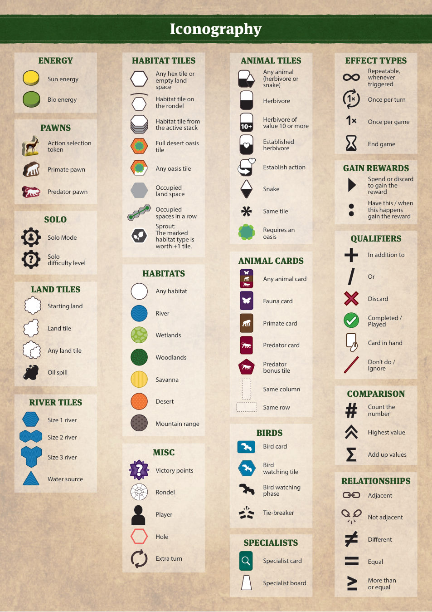
J制作名单
图片除特别注明外均来自 Wikimedia Commons（CC BY-SA 授权）并经图像处理。版本标识：2026-10-16-EN。版权：© 2026 Karma Games GmbH，Rosenthaler Str. 72 A, 10119 Berlin, Germany。